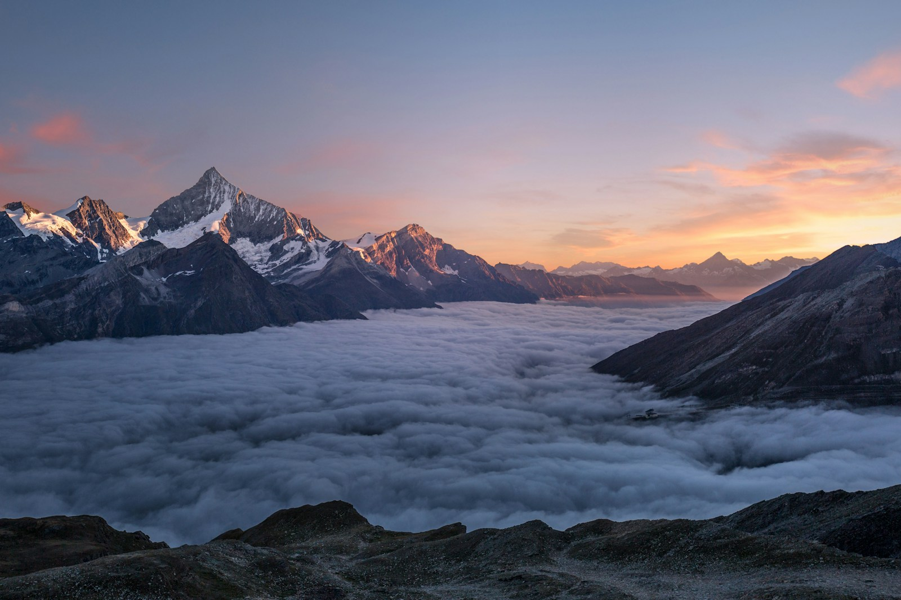

A quiet place for people who love nature — to learn, observe, document, and return outdoors.
Mission
Observe · Understand · Create · Share
Technology is not the destination. Nature is. We build field laboratories — not dashboards — so you can rediscover the living world.
What this place is
Waypoint Studio is a family of destinations — each one a room in the same cabin. Every experience includes a place to learn, a gallery of evidence, field notes, seasonal news, curated videos, and tools that send you back outside.
Read the Constitution and the Waypoint Method — our promise to teach like a lab and a field course, never like social media.
Featured photography

Mist Valley at First Light — Olympic Peninsula. Photography is evidence: what the light was doing when you were there. From Waypoint Scenes · Collections.
Learn
The heart of every destination. Field-guide lessons that begin with observation and end with an outdoor investigation.
Today's prompt: Before you read any definition, name three things you can hear outside right now.
Reading order: 101 → 102 → choose a track: species, habitats, ecology, weather, geology, photography, field skills, conservation.
Every lesson asks you to collect evidence, connect ideas, reflect, and go back outside.
Curriculum framework: design-system/education/
Field notes
Your observations are yours. Journals, sketches, and quiet records of what changed between visits.
Write three lines after your next walk — weather, light, one surprise. No gear lists.
Honor empty days. A page that says "nothing found" is still science.
Private by default. Share only when you choose.
News
Seasonal dispatches — not algorithmic feeds.
Season · Late spring
Light lingers longer
Notice how evening color holds in the valley thirty minutes later than at equinox. Phenology is running ahead in sheltered slopes — a good week to repeat last month's photograph from the same compass bearing.
Videos
Curated, click to play — never autoplay. Beginner series, habitat walks, how to read a field guide.
Featured · 4 min
How to learn like a naturalist
Observe first. Ask questions. Investigate. Return outside. (Video coming to each destination.)
Experiences
Eight field laboratories. One family. Choose a trail.
Private by default. Your observations, photographs, and field notes belong to you. Contributing to research is always optional.
When you choose to share: personal identity is never required, location privacy is respected, anonymous contribution is preferred, and you may opt out entirely. We never prioritize likes, followers, or feeds.